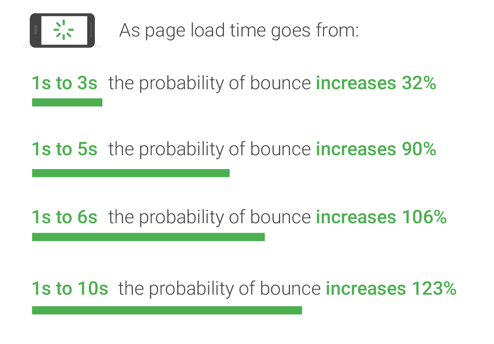
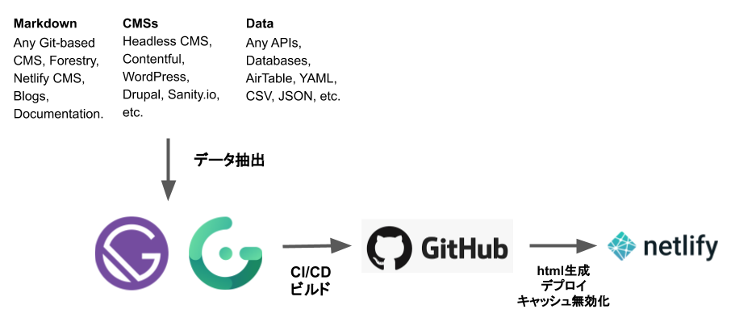
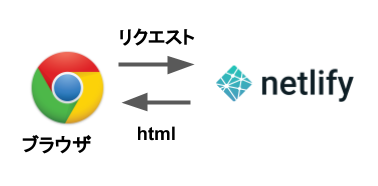
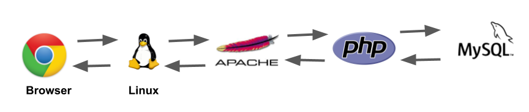
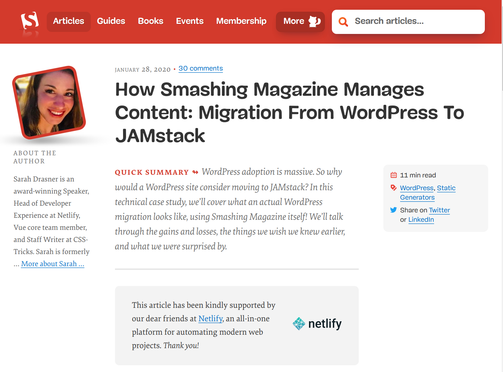
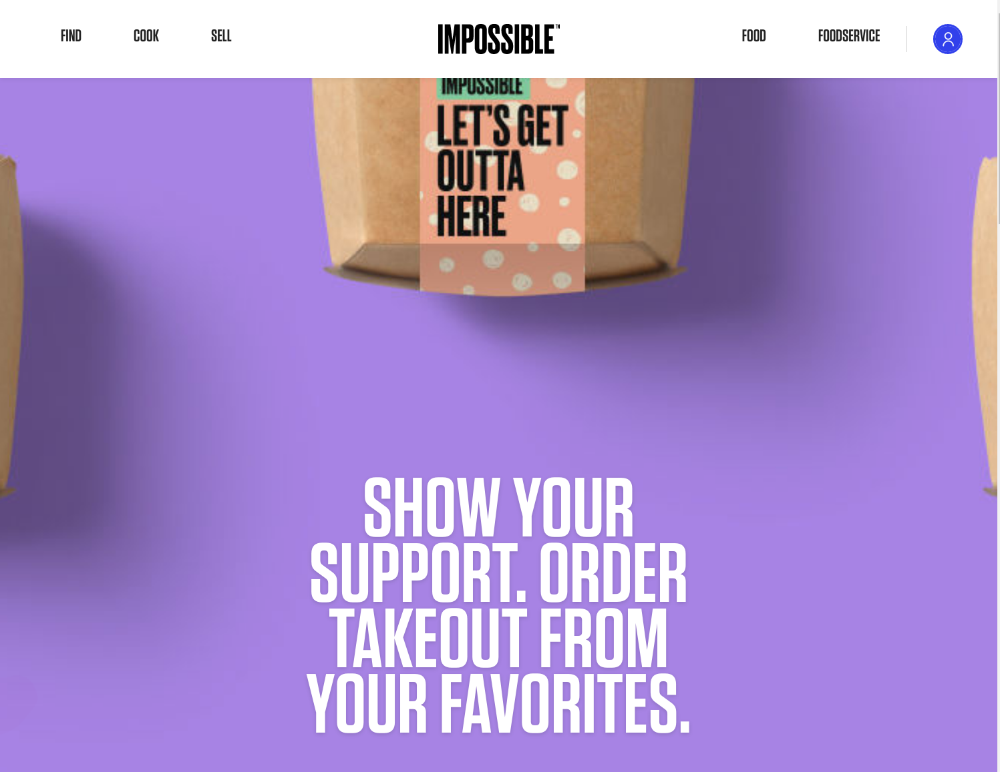
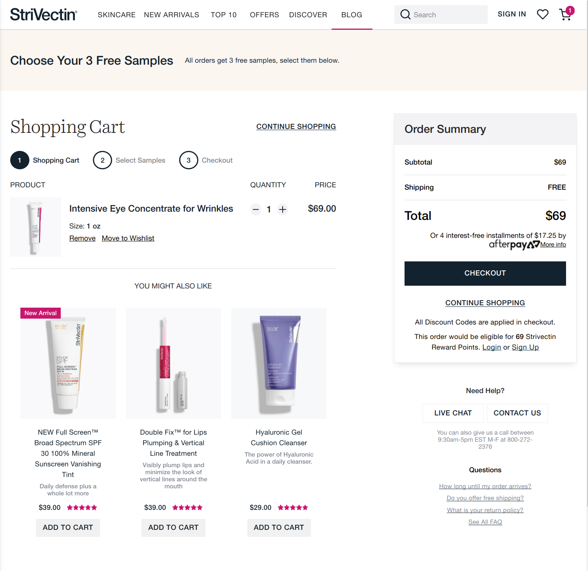
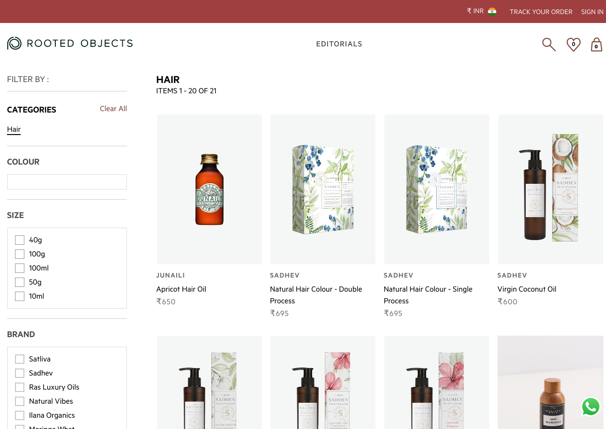
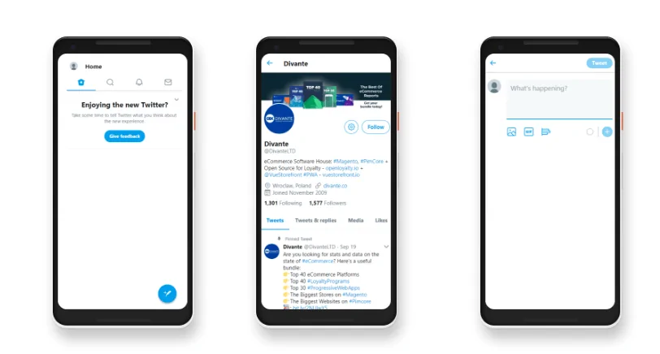

Why JAMstack?
Why PWA?
by Takeshi Amano
天野の紹介
広島出身
カナダモントリオールのコンコーディア大学をCSと経済学の学位を取得して卒業
GengoやPayPalや電通で働く
eBay出品ツールNijuyonを開発して、世界中を旅しながら仕事
2019年11月からアムステルダム在住
日本に帰りたいけど帰れない...
天野の仕事
合同会社 池田山商会代表
いろんなサイトのPWA化
IR情報提供、インフルエンサー、EC...
ウクライナの開発パートナー会社
ヨーロッパ進出企業支援
突然ですが
今日朝起きてネットと
どう接触しました？
インスタ
Googleなんとか
Amazon...
共通して言えること
世界最速
洗練されたUI
Service Workerとかもバッチリ
ユーザーの期待値
普段使っているアプリが最速
UIもすごく使いやすい
キャッシュとかもバリバリ効いている
サイトが少しでも遅いと...
遅いサイト
使いにくいサイト
キャッシュが効いてないサイト
オリンピック -> 県大会
遅いサイトのコスト
直帰率の増加
出典: Think with Google
１秒ロードタイムが遅れる
7%コンバージョン率が下がる
買い物を途中で辞める
67%のユーザーが遅いサイトでは買い物を辞める
広告の表示に追加で2秒かかる
広告の売上が4%下がる (Bing)
Amazonの場合
1秒のロードタイムの遅れ
年間16億ドル(約1720億円)の損失
遅いサイト
80%のユーザーは遅いサイトに戻らない
SEOのランキングが下がる
競合サイトにいく
遅いサイトのUX
67%のユーザーがサイトは4秒以内にロードすると期待
85%のユーザーがモバイルもPC版も同じスピードで有ることを期待
71%のユーザーが遅いサイトのブランドを信じない
77%のユーザーがサイトが遅いことをSNSとか友達に伝える
遅いサイト
結論：悪
解決方法
JAMstack
Jamstackとは？
Javascript
APIs
Markup
Javascript
クライアント側で動作
React, Vue, Svelte
Vanilla(素)のJS
APIs
データベースへのアクセスはAPI経由
REST APIs, GraphQL
Headless CMS, Wordpress, Shopify
Markup
デプロイ時に静的にファイルを生成
ファイルはCDNに置かれる
Gatsby (React), Gridsome (Vue)
Svelte (Sapper), 11ty
JAMstackの技術
静的ファイル生成
CI/CD with git
CDN
data update / cache無効化
静的ファイル生成
様々なデータソースからデータ取得
Gatsbyのテンプレートでデータ整形
画像ファイル最適化
静的htmlファイルを生成
CI/CD with git
Github, Gitlabのレポジトリにpush
Netlifyでデプロイが開始
CDNにデプロイ
静的htmlファイルが生成
CDNにデプロイ
Netlify, AWS S3, Heroku
Azure Static Web Apps, etc...
JAMstack開発
JAMstackリクエスト
LAMP
Gatsby Cloud
Incremental Builds: 差分だけのビルド
Deploy Previews
自動Lighthouseチェック
JAMstackの事例
Smashing Magazine

https://www.smashingmagazine.com/2020/01/migration-from-wordpress-to-jamstack/
Impossible Foods

https://impossiblefoods.com/
Impossible FoodsのJAMstackへの移行
page views 92%増加
unique users 61%増加
StriVectin

https://www.strivectin.com
StriVectinのJAMstackへの移行
コードのファイル数が20,000から300に
月$2000かかっていたホスティングが一日数ドルに
オーガニックの流入が継続して20%増加
出典: https://softblues.io/what-is-jamstack-gatsby-and-how-it-can-improve-your-web-experience/
先程の話
ユーザーの期待値
ユーザーはスマホを使っている
ネイティブアプリはスマホに特化したUI
webはちょこちょこ
webとネイティブアプリを意図的に使い分けている訳ではない
スマホユーザーの期待値
スマホ用に洗練されたUI
サクサク動く
電波が悪くなっても落ちない
スマホの中でネイティブアプリみたいに動作しない
結論：悪
解決方法
PWA
PWA
プログレッシブ・ウェブ・アプリ
Webサイトとして動作
AndroidとiOS両方で動作
ネイティブアプリみたいなUI
ネイティブアプリみたいにさくさく動く
Service Workerで接続が切れても使える
PWAの技術
JSのフレームワークで作る
React, Vue, Svelte
スマホのUI先、その後デスクトップのUI
Service Workerを入れる
バックエンドとはAPIで通信
PWA事例
Rooted Objects

https://rootedobjects.com
Rooted Object PWA化
インドのECサイト
ページロード時間改善、直帰率改善
コンバージョン率162%アップ
ページロード時間25%改善
売上44%アップ
出典: https://www.vuestorefront.io/rootedobjects-case-study
Pinterest PWA化

出典: https://medium.com/dev-channel/a-pinterest-progressive-web-app-performance-case-study-3bd6ed2e6154

https://twitter.com
twitter PWA化
直帰率 20%ダウン
セッション毎のページ数 65%アップ
つぶやき数 75%アップ
3Gでも5秒以内に使えるように
平均ロード時間 30%ダウン
出典: https://www.simicart.com/blog/pwa-case-studies
ありがとうございます
合同会社 池田山商会
天野たけし